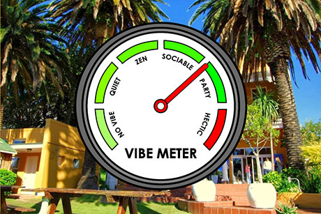
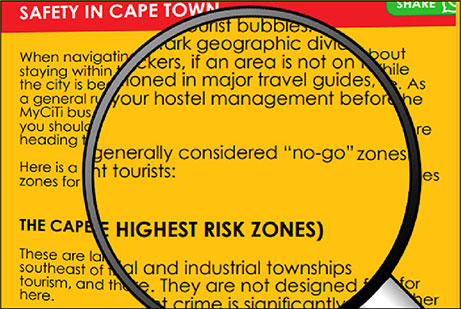
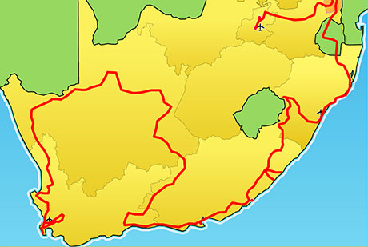
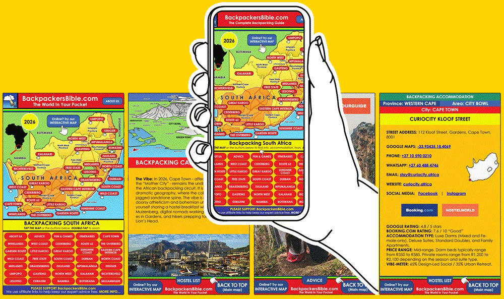
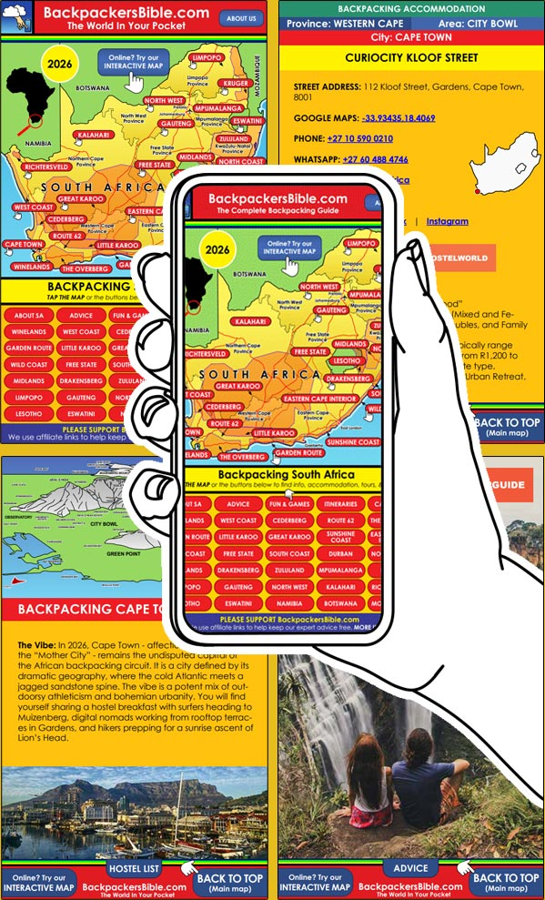
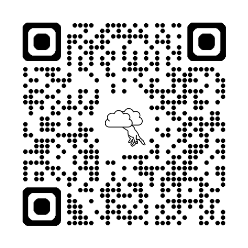
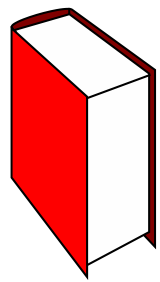

BackpackersBible.com
About Us
While most platforms only show paying members, we list every available option to give you the full picture. Our independence means we tell the truth about the good and the bad, ensuring you make informed choices. By including all accommodation - not just those on booking sites or paying members of industry associations - we provide the transparency you need to navigate South Africa with total confidence.
South Africa ROCKS! This diverse destination offers safaris, surf, mountains, deserts, jungles and vibrant culture. The Backpacker’s Bible is your ultimate companion, uncovering local secrets.
Explore
We list every single hostel - which no-one else does. Use our unique tools like the Vibe Meter and Solo Female Friendliness Scorecard to make informed decisions.
Explore
Travel smart with essential insights on everything from safety and transport to local etiquette. We break down the complicated bits - like navigating city zones.
Explore
Maximise your adventure with our curated itineraries featuring precise daily distances and transparent cost breakdowns for every budget. Browse top-rated experiences.
ExplorePlanning a trip shouldn’t be harder than the travel itself. Yet, anyone who has ever spent six hours with forty-two browser tabs open knows the struggle: one site has the price, another has the location, a third has a review from 2014, and none of them seem to agree on whether the “free breakfast” is actually just a single piece of dry toast.
BackpackersBible.com was created to end the tab-fatigue. We are the digital home for the modern nomad - a comprehensive, all-in-one resource designed to give you the full picture without the fluff.
Information is everywhere, but clarity is rare. BackpackersBible.com is an AI-assisted travel guide that works by combining boots-on-the-ground experience with all the available data from across the web, which is pulled into one centralised location in a way that would simply not have been possible until very recently. Instead of you searching through dozens of websites containing only partial information, we collect the essentials - logistics, costs, vibes, and practicalities - all in one place, together with local knowledge. So you can spend less time staring at a screen and more time exploring the world.
We also use AI to present you with read-between-the-lines stuff that you won’t see anywhere else. For example, our Solo Female Friendliness Scorecard is not just a random number: we look at the ratio of women posting positive reviews across all platforms - if there are significantly more women than men posting reviews, it says something about a hostel. We combine this with other factors such as whether or not a hostel has a night receptionist to prevent random characters wandering in, whether it has a reputation for cleanliness, whether their staff observe professional boundaries, whether it has female-only dorms and bathrooms, and so on. We use similar processes to arrive at scores for our Vibe Meter, Value For Money Rating, Safety Rating, etc. And it’s all done with you in mind.
The internet is full of “paid-for” sunshine. Most travel sites today are essentially billboards for whoever pays the most, resulting in guides that only ever say good things about every hostel, tour, or destination.
We do things differently. BackpackersBible.com is not a platform for paid advertising or shills. It’s all about what’s good for YOU, the traveller, rather than what’s good for tourism operators. Our goal is to provide information that is actually meaningful to you. If a road is bumpy, we’ll say it’s bumpy. If a hostel is legendary for its atmosphere but lacks a quiet corner to sleep, you’ll know about it. If we know that an area or a tour is life-threatening, we’ll warn you about it. And if we know that the person serving you drinks or cleaning your room is being exploited, we’ll tell you. We provide the grit alongside the glamour so that you can make more informed choices, and end up having a better holiday.
To keep the lights on and the data flowing, we utilise an affiliate marketing model. This means that if you book through some of the links on our site, we may earn a small commission at no extra cost to you.
However, unlike the travel platforms that hide direct contact information to force you through a booking engine, or backpacking associations that only list paying members, we believe in total transparency. On BackpackersBible.com, we provide ALL available contact details for the hostels and operators we list - including their direct websites, phone numbers, social media pages, email addresses and locations.
For once, the choice is entirely yours. You have the freedom to use convenient, safe sites like booking.com if you prefer their interface, or you can book directly with the hostel and perhaps get a better deal. We provide the data; you make the decision.
While we strive for 100% accuracy, the world moves fast. Borders open, prices fluctuate, and even the best hostels can change hands. Because we are an AI-assisted platform, we acknowledge that we can occasionally make mistakes or miss a recent update.
We don’t claim to be infallible - we just claim to be helpful. That’s where you come in. We are a “human-in-the-loop” project, and we are always open to corrections from the community of travellers who are actually on the ground.
• Spot an error?
• Have a price update?
• Were we wrong about a hostel’s vibe?
• Know a hidden gem we missed?
Please let us know. You can suggest any corrections or updates by emailing us at:
Please share this guide with fellow-backpackers, and tell the hostels that you found them on BackpackersBible.com. Safe travels, and we hope you have a fantastic holiday! 
Here's a hostel guide that you can use on your phone while touring South Africa. It works even in areas where there’s no signal or you’re out of data and offline. It contains write-ups of all the country's backpacking regions, and all the backpacking hostels' contact details.
There's also a paid version - THE definitive guide to backpacking South Africa, with extended write-ups and loads of good advice. It comes as an offline PDF, as well as an app with interactive maps for you to use when you're online.


FREE OFFLINE HOSTEL GUIDE: the Lite version contains write-ups of all the country’s regions, together with ALL the hostels’ contact details and is absolutely FREE. It is the perfect essential companion for budget travelers exploring South Africa on a shoestring.
DOWNLOAD(PDF - 300 pages - 3mb)


THE DEFINITIVE OFFLINE GUIDE: For only €10 you get an offline PDF and an online app. It contains all that the Lite version does, plus regional maps showing the hostels’ locations, extended hostel write-ups, photos, loads of the best advice, suggested itineraries, and more.
DOWNLOAD(PDF - 1000 pages - 17mb
plus
Online App)